Chapter 2 Data Visualisation 1
In this session we’ll look at data visualisation using the ggplot2 package. As with most R stats courses, we’re focusing on data visualisation early on as this allows you to get a good grasp of your data and any general patterns within those data prior running any inferential tests.
We’ll follow Hadley Wickham’s approach in R for Data Science by getting you working on producing some pretty graphs from the outset to see how ggplot works. After that, we’ll look at how ggplot can handle several data types. Along the way, we’ll add some customisation to our graphs so you can see the flexibility of this package.
2.1 Getting Started
First, we’ll load the packages necessary for this class. Nicely, ggplot2 is part of the tidyverse family, so we don’t need to load this separately to the other packages in our library.
Sorry to have made you create your own data frames before, but R and it’s packages often come with in-built data sets. We’ll use the starwars data set from dplyr() which loaded with the tidyverse package. Why star wars? It’s convenient, and I’m a big nerd, so indulge me. Because this is built into R, you won’t see it in your Data pane in the Global Environment. That doesn’t matter for us, but rest assured it is there. Let’s get a sense of how this data looks. How about printing the first 10 entries?
2.1.1 The Star Wars Tibble
# look at first 10 entries
starwars## # A tibble: 87 x 13
## name height mass hair_color skin_color eye_color birth_year gender
## <chr> <int> <dbl> <chr> <chr> <chr> <dbl> <chr>
## 1 Luke Sk~ 172 77.0 blond fair blue 19.0 male
## 2 C-3PO 167 75.0 <NA> gold yellow 112 <NA>
## 3 R2-D2 96 32.0 <NA> white, bl~ red 33.0 <NA>
## 4 Darth V~ 202 136 none white yellow 41.9 male
## 5 Leia Or~ 150 49.0 brown light brown 19.0 female
## 6 Owen La~ 178 120 brown, gr~ light blue 52.0 male
## 7 Beru Wh~ 165 75.0 brown light blue 47.0 female
## 8 R5-D4 97 32.0 <NA> white, red red NA <NA>
## 9 Biggs D~ 183 84.0 black light brown 24.0 male
## 10 Obi-Wan~ 182 77.0 auburn, w~ fair blue-gray 57.0 male
## # ... with 77 more rows, and 5 more variables: homeworld <chr>,
## # species <chr>, films <list>, vehicles <list>, starships <list>I know that the starwars data set is saved as a tibble. That allowed me to just print its name to see the first 10 entries. But be wary of this with large data sets where you don’t know how it’s stored. You don’t want to flood your console if your data is stored as a data.frame!
Let’s plot the mass and height of our characters against each other to see if there’s a trend.
2.1.2 Plotting in ggplot2
ggplot(data = starwars) +
geom_point(mapping = aes(x = mass, y = height))## Warning: Removed 28 rows containing missing values (geom_point).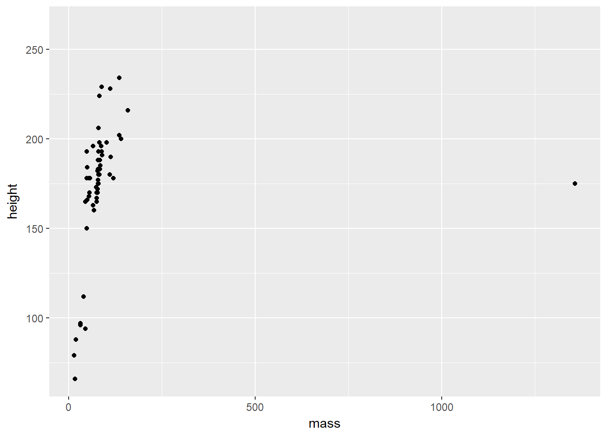
So, we can see just how easy it is to create a plot of points in ggplot. Well done! There seems to be a positive relationship between mass and height in the starwars data set. We also got a couple of surprises: (1) a warning about 28 rows that contain missing values, and (2) a really big outlier. First, we’ll explore how ggplot works, then we’ll look into these surprises.
The ggplot() function always needs to take a data set. This data set should hold everything you want to plot. Crucially, ggplot builds up the plots in layers. So making the first call ggplot(data = starwars) tells ggplot where it should look for data, but it doesn’t do much else aside from making a grey background.
After this, you need to add some layers to your plot in the form of geometric objects (or geoms, for short). We decided that because we want to look at the link between mass and height, two continuous variables, that adding some points to the plot will be most useful for getting an idea of how the data are related. To do this, we used the geom_point() function. There are other geoms we could add, but for now we’ll focus on points.
Crucially, geom functions take as an argument the mapping in your data. That is, how the visuals of the plot are mapped to your data. This mapping is always defined in terms of the aesthetics of your plot aes(), e.g. which variables to map onto the x and y axis, in this case.
You can see how this makes ggplot so flexible:
- Your data argument is flexible, so you can pass different data sets to the same chunk of code by changing out what you pass to the
data =argument. - Your aesthetics are flexible, so you can pass different columns to your x and y axis
- Your aesthetics are even more flexible because they can take aesthetics other than just what to plot on the x and y axes
Let’s see the flexibility of your aesthetics in action
2.1.3 Cleaning Before Plotting
We saw before that R gave us a warning that we have rows containing missing values. In this instance, this just means that 28 people weren’t plotted because they didn’t have height and/or mass values. I’ll save filtering data properly (and what the %>% (read pipe) symbol does) for another lesson, but we’ll get rid of them for now by running this code, below:
filtered_starwars <- starwars %>%
drop_na(height, mass)2.1.4 Changing Your Aesthetics
Let’s say we’re interested in showing the relationship between mass and height within genders. How can we do this? One way would be to add colour to our the points on the plot in order to highlight the different genders.
ggplot(data = filtered_starwars) +
geom_point(mapping = aes(x = mass,
y = height,
colour = gender
)
)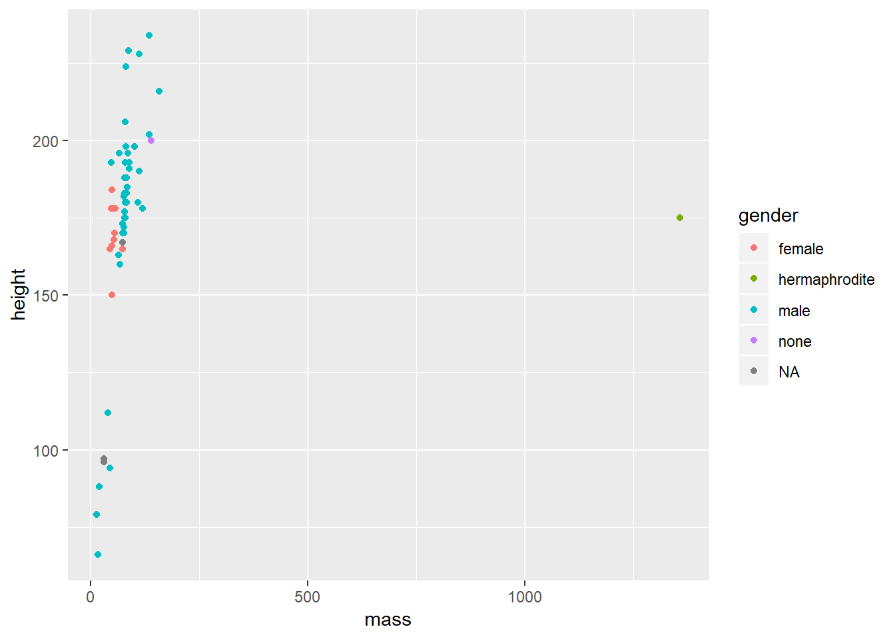
We don’t get that warning now that we removed the NAs and passed the filtered data as an argument. That wasn’t really necessary as ggplot can handle that for us, but it stops the horrible warning from popping up! Warnings in R are there to tell you that the output of your code may not contain what you wanted it to contain. In the previous plot, ggplot dropped those with missing heights and masses, even though we didn’t explictly tell it to do so. Here, because we filtered those entried with missing values before plotting, we don’t get a warning. Warnings are different to errors in that your code will still work, but you need to check out whether it did what you wanted it to do. On the other hand, errors indicate you did something wrong and your code will fail to run.
Now, we now have colour to see the relationship between mass and height across the genders in the data set. But it’s a little difficult to see this relationship given the outlier. Let’s see what that outlier is, and whether we should remove it from our data.
Again, you’ll learn how this filtering works in later lessons, for now, I just want to show you how it’s useful to understand your data prior to creating a final plot of your data.
filtered_starwars %>% filter(mass > 1000)## # A tibble: 1 x 13
## name height mass hair_color skin_color eye_color birth_year gender
## <chr> <int> <dbl> <chr> <chr> <chr> <dbl> <chr>
## 1 Jabba D~ 175 1358 <NA> green-tan,~ orange 600 herma~
## # ... with 5 more variables: homeworld <chr>, species <chr>, films <list>,
## # vehicles <list>, starships <list># overwrite data to remove outlier (keep all with mass below 1000)
# filtered_starwars <- filtered_starwars %>% filter(mass < 1000) # not runOf course, it’s Jabba the Hutt. We could choose to throw Jabba out of our data by using the code above to overwrite the data (commented out), but for now, we’ll see just how powerful ggplot is without throwing away our data.
ggplot(data = filtered_starwars) +
geom_point(mapping = aes(x = mass,
y = height,
colour = gender
)
) +
coord_cartesian(xlim = c(0, 180))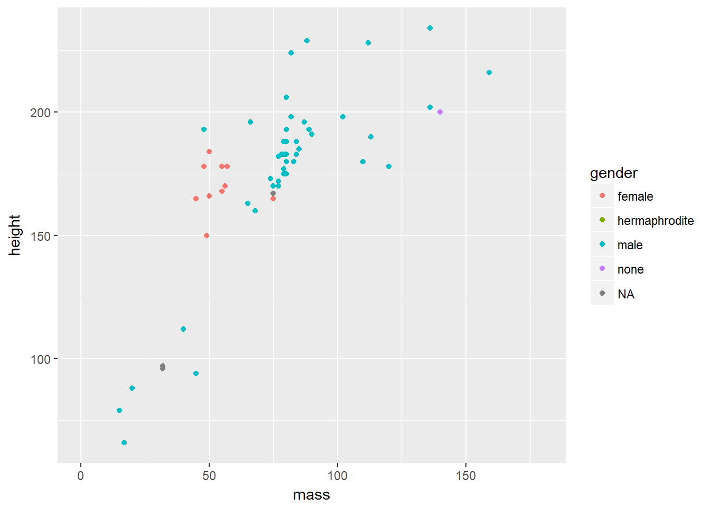
This time we added a function coord_cartesian() to the end of our ggplot call. We defined the limits of the x axis to be between 0 and 180. This way, we can get a better look at the trends in our data. Why do we define limits inside this function? Well, we could have also manually defined the scale with scale_x_continuous(limits = c(0, 180)). This may seem more inuitive, but it throws out the data points outside the limits prior to plotting. Why is this a problem? ggplot has some nice functionalities such as drawing lines of best fit for you based on the data in the plot. If you throw data away while plotting, your line of best fit will shift. So, if you decide that you want to change your scale but keep your model fits for all data, use coord_cartesian(). Given this is an outlier, your choice doesn’t matter if you’re just trying to show trends like this, but your choice is important if you want to show any inferential statistics associated with the data.
Next up, we’ll look at changing a few components of the points on the plot.
ggplot(data = filtered_starwars) +
geom_point(mapping = aes(x = mass,
y = height,
colour = gender
),
alpha = 0.7, # opacity
shape = 17, # triangles
size = 4) + # bigger points
coord_cartesian(xlim = c(0, 180))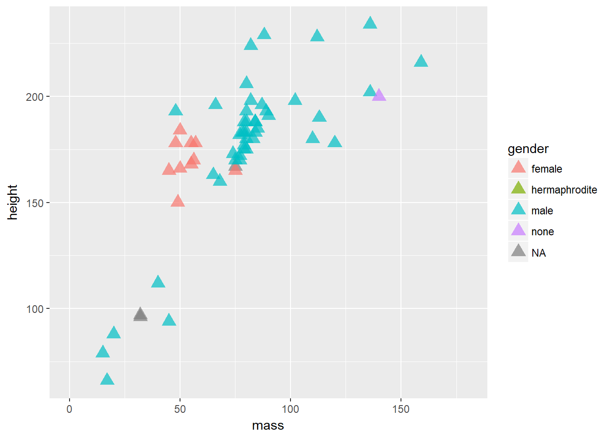
We’ve added 3 variables outside of the aes() mappings. This means that all of the points within the plot are changed in the same way: They all become a little bit transparent through the alpha variable definition; they all take a triangle shape through the shape variable definition (and the number associated), and they are all the same size due to the size variable definition.
If we put these variables within the aes() mappings and associated them with a variable within the data set, such as gender, then each point would be affected differently depending on which level of the gender factor the individual data points belong to. It’s important to remember that everything within aes() is mapped onto variables with which to display your data. So, the x location, y location, and anything else that you define within aes() can vary by your data set. Everything outside of it will affect all levels of your data.
Here, we’ll define colour both within and outside the aes() mapping, causing a clash. Try this plot below to see how clashes are resolved in ggplot:
ggplot(data = filtered_starwars) +
geom_point(mapping = aes(x = mass,
y = height,
colour = gender
),
colour = "red") +
coord_cartesian(xlim = c(0, 180))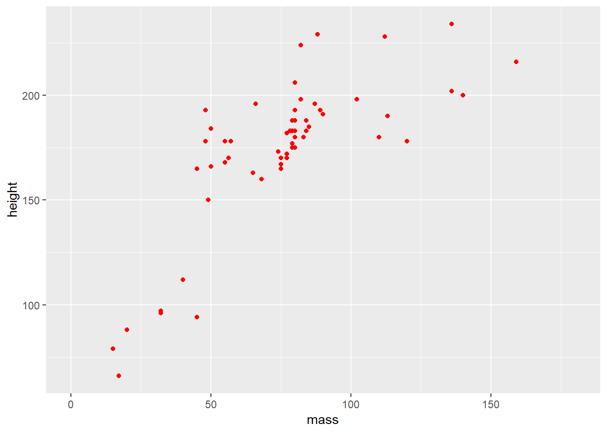
The different colours for each level of gender are now gone, along with the legend! Our variable definition for colour outside of the aes() mappings overrides that within aes(). This is because we’ve manually set the aesthetic properties of our plot by defining colour as an argument of the geom function, rather than of the aethetic mapping.
R has some built in shapes that we can define within our plots. For shapes, these are divided into three categories:
- Colour border with hollow fill (0 - 14)
- Colourless border with colour fill (15 - 18)
- Colour border with colour fill (21 - 24)
Bear in mind that colour and fill are different properties that we can control within our plots. Below, I’ve used hex values to specify the exact colours that I’d like for the colour (around the border) and the fill for our points. You can find a nice hex selector at htmlcolorcodes.com which will allow you to customise your plot colours to your liking. Just change the letters and numbers after the # in the colour call, and you can change the colours to your liking.
In the example below I chose my colours based on the diverging colourblind safe selection of colours from Color Brewer. I’d recommend that you use this if you’re going to include colour in any plots for papers/presentations.
ggplot(data = filtered_starwars, na.rm = T) +
geom_point(mapping = aes(x = mass,
y = height,
colour = gender
),
colour = "#af8dc3",
fill = "#7fbf7b",
shape = 21,
size = 8,
stroke = 3
) +
coord_cartesian(xlim = c(0, 180))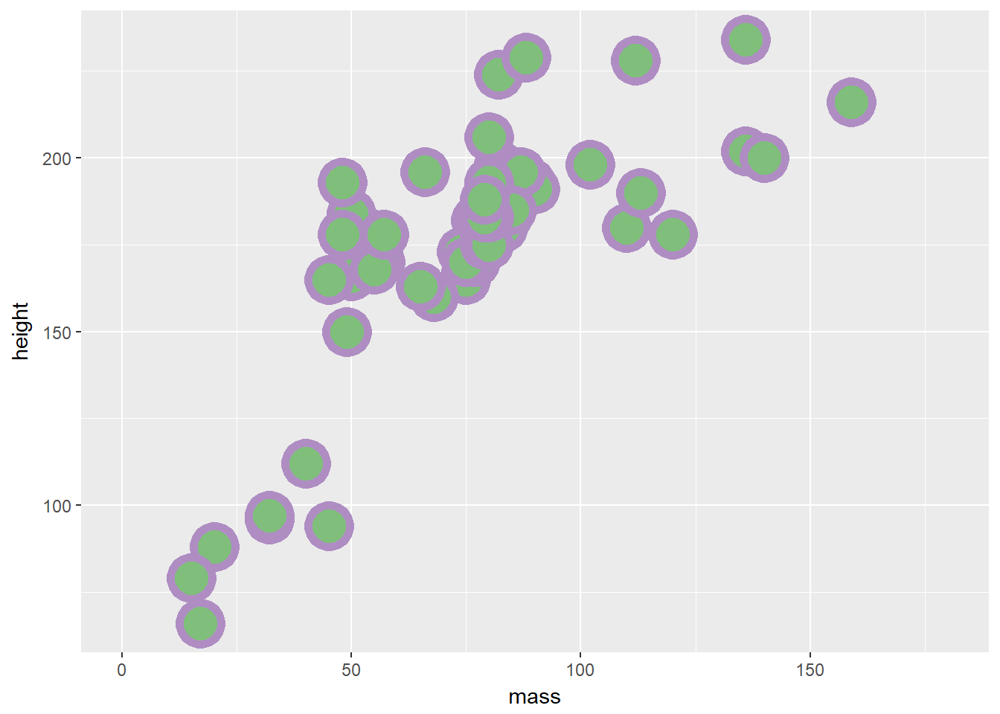
Try to mess about with the different definitions that we provided above. Change the colour, size, and stroke values to see how these variables work.
We’ve used the aesthetics above to define categorical data by colour. But what happens if we use continuous data?
ggplot(data = filtered_starwars, na.rm = T) +
geom_point(mapping = aes(x = mass,
y = height,
colour = birth_year
)
) +
coord_cartesian(xlim = c(0, 180))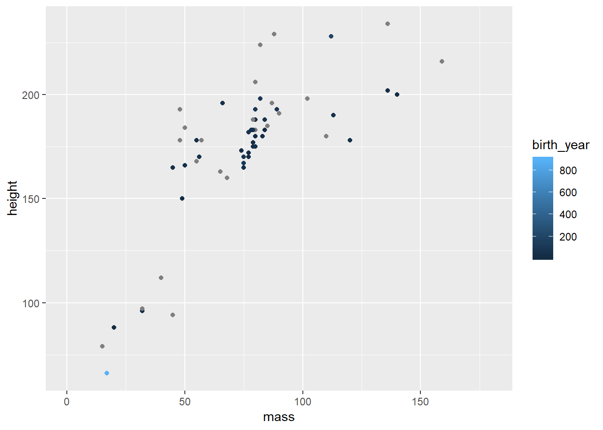
You can see that we get a sliding scale for the hue of the points. Pretty neat, but also quite difficult to get a real idea of where on the scale the points lie.
There are many inbuilt plots that you can create with ggplot2 by mapping your data to different geoms. To get an idea of all of different types of geoms, type ??geom. This should give you an index of all of the geom types available to ggplot2 in your Help pane of RStudio.
2.2 Exploring Different Geoms
You’ve already learned about geom_point() above, but now we’ll explore the other geom types.
For this exploration, we’ll use a different data set with a limited number of groups for ease of visualisation. I’ve simulated some data for this exercise. You can find this data in the inputs folder for this lesson. (If you’re interested, you can also find the script for generating this data in the data_generation folder). Let’s load this data into R. Here, we use the function read_csv rather than the base R read.csv. This is because read_csv is faster, typically does a better job at guessing the data types for your columns of data, and saves the output as a tibble.
Note: read_csv will try to guess the types of data in each column for a data set loaded into R, but sometimes it can fail. We’ll cover instances where this fails, and how to remedy it, in the next lesson.
rt_data <- read_csv("inputs/rt_data.csv")How should we interpret this data? Imagine that we ran a lexical decision task on two groups of participants. In one condition, participants responded to sentences such as “Eric turned down the volume”, and had to indicate whether this sentence made sense by turning a knob. In the match condition, agreement matched the motion indicated in the sentence (e.g. left = yes, it makes sense), and in the mismatch condition agreement did not match the motion indicated in the sentence (e.g. right = yes, it makes sense). Zwaan and Taylor (2006, Experiment 4) hypothesised that when the action and response are matched, resposne times should be quicker than if they do not match.
The participant column indicates individual participants, the gender column indicates the gender of our participants, response_condition indicates whether participants took part in the match or mismatch conditions, and reaction_time, our dependent variable, represents the average reaction time in milliseconds for each participant to respond to whether or not the sentences made sense.
2.2.1 Bar Plots
Bar plots are one of the most common plots you’ll come across in Psychology. They’re most useful for representing counts of data that are divided into categories. For example, you could use a bar plot to show the number of male and female participants in your study. Using our simulated data set, we can use a bar plot to show the counts of males and females in our data set.
ggplot(data = rt_data,
mapping = aes(x = gender)
) +
geom_bar()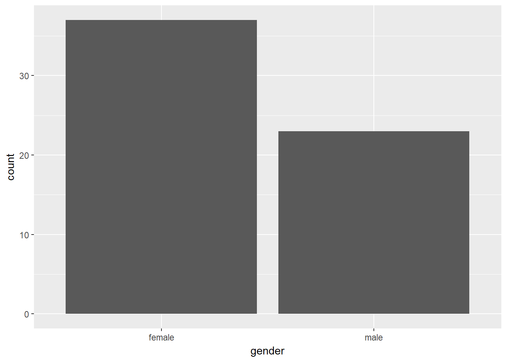
You’ll often find that psychologists like to plot continuous data in a bar plot. I’ve done this myself, but we can do better. One alternative would be to use a boxplot, a violin plot, or even a pirate plot (well, we are plotting with Rrrrrrrrr…).
Since we’ve got data which represents mean scores for each participant, this will be suitable for plotting straight away. If, however, you have raw data, remember to aggregate by participants or items prior to plotting. We’ll cover this in later classes.
2.2.2 Box Plots
Box plots provide a better way to represent continuous outcomes (such as reaction times) than bar plots as they give you more information about the variance within your data set.
2.2.2.1 How to read a box plot
- The middle line represents the median
- The upper white section of the box the upper quartile: 75% of scores fall below this.
- The lower white section the lower quartile: 25% of scores fall below this.
- Together the quartiles represent the interquartile range: The middle 50% of scores.
- The limits of the whiskers (black lines) for the upper and lower parts of the graph represent the smallest and largest observations that are equal to the upper or lower quartiles minus or plus 1.5 times the interquartile range. Effectively, this is most of the rest of the data, apart from outliers.
- The dots represent outliers (i.e. those values outside of the whiskers)
ggplot(data = rt_data,
mapping = aes(x = response_condition,
y = reaction_time
)
) +
geom_boxplot()We can see that the median reaction time is highest for those in the mismatch condition. Notice also that the interquartile range is larger, and so is the upper limit of the whiskers. This all suggests that those in the mismatch group vary more from each other than those in the match condition.
Also, notice the outlier in the match group. Someone obviously has a very slow reaction time compared to the rest of the cohort. I wonder why that could be? Perhaps it’s because they misinterpreted the instructions, accidentally putting themselves into the mismatch condition. Or, it could be because I simulated this data and didn’t control for how outliers were distributed.
2.2.3 Violin Plots
Additionally, we have violin plots which show you the density of the mean scores. The wider the section of the violin, the more scores around that area. We set trim to FALSE within the violin plot so that we see the full tails of the data. If we set this to TRUE, then the tails are trimmed to the range of the data.
It’s also useful to draw quantiles on the violin plot, so we can see the quantiles as with the box plot using draw_quantiles and by specifying where we want these quantiles. Here, we chose the upper and lower 25% and the interquartile range.
ggplot(data = rt_data,
mapping = aes(x = response_condition,
y = reaction_time
)
) +
geom_violin(
trim = FALSE,
draw_quantiles = c(0.25, 0.5, 0.75)
)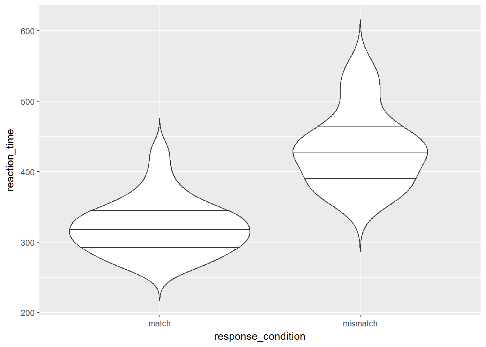
2.2.4 Density Plots
Now we’ll look at ways to check for the distribution of your continuous variables. This is a good way to get an eye for whether or not your data are skewed and require a transformation on the data, or a non-parametric test when it comes to inferential statistics. Again, we’ll return to what this means in regards to statistics later in this course, but for now it’s a good idea to understand how you can check the distribution of your data prior to computing any statistics.
Again, only the first two lines here are necessary to make the plot. The additional lines change the axis labels, set the limits and break points on the x-axis label, change the title of the legend, and set the theme to black and white.
ggplot(data = rt_data,
mapping = aes(x = reaction_time,
fill = response_condition
)
)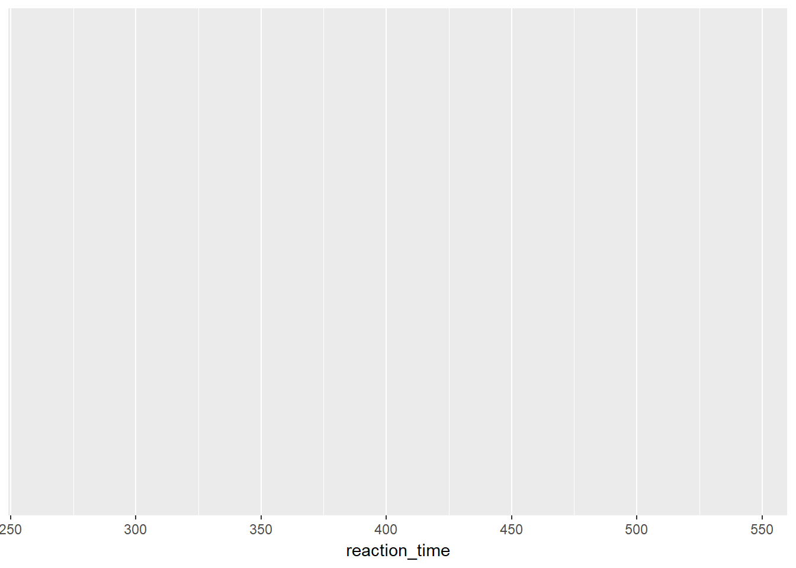
Did you notice how now that we have reaction time plotted on the x-axis (vs. the y-axis in the pirate plot), we had to change to using scale_x_continuous() and changing the limits and breaks within it? Also, we changed the title of our legend to allow for capitalisation and to remove the underscore between words by using guides(fill = guide_legend(title = "Response Condition")).
2.2.5 Histograms
If you have relatively few observations, a histogram may be more appropriate than a density plot. But, we’ll just stick to the same data as before to see how this works.
Here, it’s often useful to set the binwidth prior to plotting. ggplot will try to set it to a default if it can, but this may not be what you want. Here, we’ve set the binwidth to 50, so we count how many observations we have for reaction times in 50ms bins, i.e. from 225 to 275ms, from 275 to 325ms etc.
ggplot(data = rt_data, mapping = aes(x = reaction_time)) +
geom_histogram(binwidth = 50,
fill = "white",
colour = "black"
)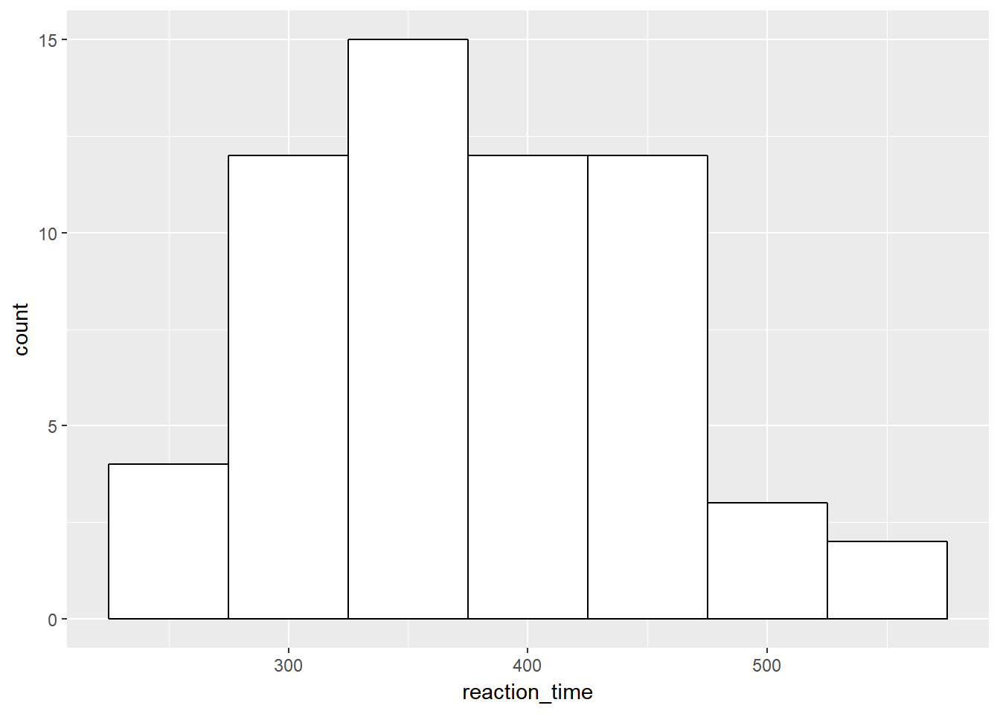
2.3 Exercises
Try out the exercises below, we’ll cover these in the class with the solutions uploaded at the beginning of each session in a separate downloadable link. Try to solve these questions before resorting to the solutions. I’ll be there to help out where necessary.
2.3.1 Main Exercises
2.3.2 Additional Exercise
Try loading a different data set from the packages you have installed in R. If you’re not sure of the names and content of these data sets in order to load them, then run data() in the command line. You can attempt to map out the data using any of the geoms discussed above.